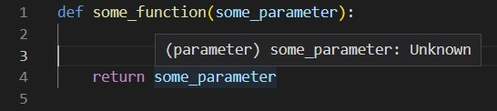
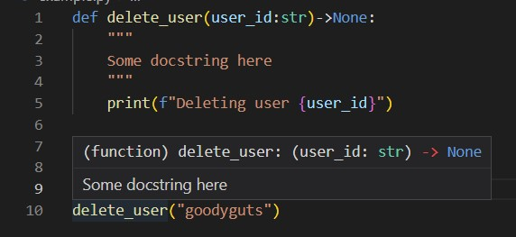
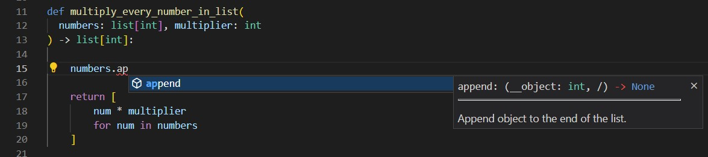
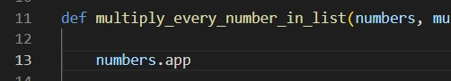
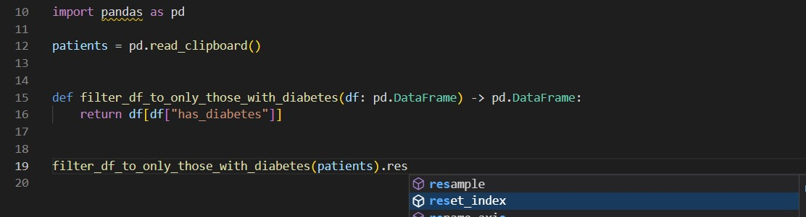

Python Type Annotations
By Adam Carruthers
Hello and welcome to my presentation about type annotations an in
python
What are type annotations?
What are types?
Let's find out!
What are types 🤔
Let's start basic, what are types?
You guys will already be vaguely familiar with types from SQL. In
SQL tables, each column has a data type.
The first column is a name, which is text, and we call this data
type "string".
The second column is a date.
The third column is a true or false value, which we call
boolean.
The fourth column has height, which is a number with a decimal
point. We'll call this float, which stands for "floating point".
You will sometimes hear this called "double".
Finally, we have a whole number, which I'll call integer,
because that is the standard name for whole numbers in
computing. Obviously the number of children a person has is a
whole number - unless you accepted an offer from King Solomon in
the bible.
Whenever a computer has a bit of data, it knows what type it is, and
types are important. Depending on what the type of something is the
computer can do different things!
name
date_birth
has_diabetes
height
n_children
"John"
1982-07-21
TRUE
175.4
2
"Sally"
1992-11-03
FALSE
161.5
1
Types in Python
So Python has types too! Much like the columns in the SQL table had
a type, the objects in python have types. So here, the variable name
has type string, cos it's a string, it is text.
name = "John"
import datetime
date_birth = datetime.date(1982, 7, 21)
has_diabetes = True
height = 175.4
n_children = 2
More complex types
Here we have some complex types. In the variable "a_list" is a list
(shockingly). In the variable "a_dictionary" is a dictionary. In the
variable "a_data_frame" is an object with the type "DataFrame".
a_list = [1, 2, 3, "a", "b", "c"]
a_dictionary = {
"something": {
"nested": "dictionary",
123: "anything goes really"
}
}
import pandas as pd
a_data_frame = pd.read_csv("some_data.csv")
Python is flexible
Python let's you do something quite crazy, which isn't allowed in a
lot of other programming languages. I can make a variable and assign
it a value (click). Then I can, later on, reassign it (click)
my_var = 5
Python is flexible
to a variable of a different type. Before it was an integer, now it
is a list of strings. And then I can do it again (click)
my_var = 5
my_var = ["hello", "there"]
Python is flexible
At this point in writing fake examples, I was getting pretty bored
and scraping the barrel. But this variable now contains a dictionary
of integers to integers. If you are not familiar with dictionaries,
I strongly recommend that you take a Python course and get familiar,
because they are very important.
my_var = 5
my_var = ["hello", "there"]
my_var = {9999: 1234567}
Python is flexible
Okay, couldn't help to include a crazy example to blow your brain if
you're used to SQL. We can actually take functions and assign them
to variables, and then use them. Python is flexible.
my_var = 5
my_var = ["hello", "there"]
my_var = {9999: 1234567}
my_var = print
my_var("this will print to the console")
Flexibility in functions
This flexibility extends to functions. We have a function here that
says hello between two people. In the function I'm using this thing
called an f-string to place the values of the parameters in the
string, I recommend looking into it if you're not yet familiar. So
when we run this code, we will see (click) "Barry says hello to
Nish". But we can also do weird stuff
def say_hello_between_two_people(person1, person2):
print(f"{person1} says hello to {person2}")
say_hello_between_two_people("Barry", "Nish")
Barry says hello to Nish
Flexibility in functions
We've swapped out what is in the function. We can take where we put
the people's names, and just do whatever we want. So here we are
going to see? That's right, "True says hello to 3.1415". Like a
mathematician's dream.
def say_hello_between_two_people(person1, person2):
print(f"{person1} says hello to {person2}")
say_hello_between_two_people(True, 3.1415)
True says hello to 3.1415
Flexibility in functions
And now we can go truly crazy, because Python let's us do whatever
we want. Take a moment to guess the answer.
def say_hello_between_two_people(person1, person2):
print(f"{person1} says hello to {person2}")
say_hello_between_two_people([1, 2], {"contrived": "example"})
[1, 2] says hello to {"contrived": "example"}
Flexibility pain
So this flexibility is cool and all, but without guardrails, you
often end up erring. So here's an example, we're trying to delete
some user. We have this function that deletes it for us, and then
we call it down below. Do you spot the error? (click)
user_id should have been a string! Isn't it obvious? No, it's not.
It's not written anywhere that user_id is a string and not an int.
def delete_user(user_id):
...
delete_user(user_id=2358)
❌ user_id should have been string!
Also it doesn't work well in code editors
Another related issue. When you are using code editors, they can
normally be very helpful with things like autocomplete. However,
since there is no way of knowing what function parameters actually
are, code editors can't really help you in python. (click) So here
we can see VSCode letting us know that it has no idea what this
parameter is.

The old solution
The old solution to this problem, it was the solution at google,
and it is also commonly the solution here, is to put the type the
variable should be in the docstring (click). I mean it's fine. You
now make fewer errors.
This solution is better than the alternative, but I don't love it.
It's a lot of characters. It does nothing to help your code editor
understand the types. Python, in built, has a better way.
def delete_user(user_id):
"""
Args:
user_id:
String representing the user id
"""
...
delete_user(user_id="2358")
Type annotations 🥳
The solution I recommend is called type annotations. So here
(click) is how you define the type for a variable, with simple
types. You just put a colon after the variable name and you say
what the type actually is. int for integer, bool for boolean.
And (click) it's officially part of Python since Python 3.7, so it
should just work. How do you write more complex types? (next)
x: int = 1
x: float = 1.0
x: bool = True
x: str = "test"
Officially part of Python since Python 3.7!
More complex annotations
How do you do the more complex types? Well it depends. If I have a
list of integers, I can write this (click). If I have a dictionary
of strings to floats I can do this (click). If I have a DataFrame,
you can do the below (click). There are also a way to represent a
combination of types. So with this union thing, the type of x is an
int *or* a string. Note, for some of these to work you need Python
3.9 or above - so keep that in mind.
import pandas as pd
from typing import Union
# To do this you need python 3.9+
x: list[int] = [1, 2, 3]
x: dict[str, float] = {"field": 2.0}
x: pd.DataFrame = pd.read_csv("data.csv")
x: Union[int, str] = function_that_returns_either_int_or_string()
Just to give you a challenge, here is a complex object with a
complex type (click). I'm going to give everyone a moment to
decide what type they think this should have. 3, 2, 1. Okay, so
this is a dictionary, and it maps strings to lists of integers. So
the type is (click) dict[str, int[list]].
Types are complex, and I don't want to go fully into the
intricacies, so we'll leave how to write the type definitions
there for now.
student_grades_by_name = {
"Alicja": [99, 82, 72, 21],
"Joel": [61, 78, 27, 89],
}
dict[str, list[int]]
Type annotations on functions
The most important place we use type annotations is on functions.
In functions we can define the types of the parameters and also
the return type of the function.
Let's look at our example from earlier, but with types (click).
It's pretty easy no? After each parameter you put a colon, then
you put the type of that parameter. For the return type, you put a
line and a chevron to make an arrow, then you put the return type.
This function returns nothing so we put None. In my opinion that's
a much neater way to show the types of each of the parameters.
Let's look at a slightly more complicated function. This function
takes a list of integers and an integer multiplier, then returns a
new list where each item in the list has been multipled by that
number. Here (click) is that function, with the type definition.
This function that I have written uses a list comprehension, which
I would recommend learning if you're properly getting into python.
def delete_user(user_id: str) -> None:
...
def multiply_every_number_in_list(
numbers: list[int], multiplier: int
) -> list[int]:
return [
num * multiplier
for num in numbers
]
multiply_every_number_in_list([1, 2, 3], 2)
# >> [2, 4, 6]
It's optional and not enforced
Type definitions are optional and they are also not enforced when
you run the code.
(click) You can just not put a type definition for anything,
that's still allowed. And you're allowed a mix.
(click) You can just straight up lie, and there won't be an
error when you run this program. But you shouldn't.
(click) In an equal vein, you're free to ignore instructions. If
a function says to give it an integer and you want to give it a
string cos you feel like it, that's your perogative.
You can do all these things if you have low enough morals. Since
it is optional and isn't enforced, the type annotations are
essentailly just a form of documentation - and we all know that
RAP is about good documentation.
But this documentation is better than a simple comment.
# Allowed to not have type definition
x = 5
def func(param_without_type):
pass
# Allowed to be a lyer
gary: int = "👿"
# Allowed to ignore instructions
def do_a_thing(param: int) -> None:
return []
do_a_thing("blah")
It shows if you hover your mouse in VSCode
So you may or may not know that when you hover over a function in
VSCode, it shows the docstring. It also shows the type annotation.
So in this way the type annotation is good documentation.
Now's a good time to mention that you need to have the python
extension turned on in VSCode for this all to work. Also, if you
use spyder, spyder doesn't do a lot of this, so change to VSCode.

Autocomplete
Also, VSCode understands type annotations, and so VSCode can now
autocomplete many things for you in the function. In this example,
because VSCode knows that numbers is a list, it knows that it has
the append method. So when I type numbers.app, it can recommend to
finish it off with append, and it also gives me the docstring of
the append method. (click)


The autocomplete works with the return types as well. Because
VSCode knows the return here is a dataframe, it can recommend me
the reset_index method.

Static type checking
For the absolute final final thing. I said that the type checks
weren't enforced. This means that even if the type hints are
wrong, the python will still run. However, you can get VSCode to
check the types for you without you running the code!
This is called static type checking. Static means that the code
isn't run. You have to turn on a setting (click) here, it is an
opt in feature, but it comes with the python extension.
If we look at that example from earlier - look! It spots the
error! We get an error that says the type is incompatible when we
hover our mouse.
There are actually tools out there that can run type checking
analysis on all of your code. That means you can run them before
you commit your code, to spot mistakes you might have missed. The
most famous of those tools is called mypy. The one included in
VSCode, made by microsoft, is called Pylance.
Thank You! Questions?
So that's the end of my part of the presentation. I hope you now
understand types a bit better, and I hope you start you start using
type annotations throughout your code.